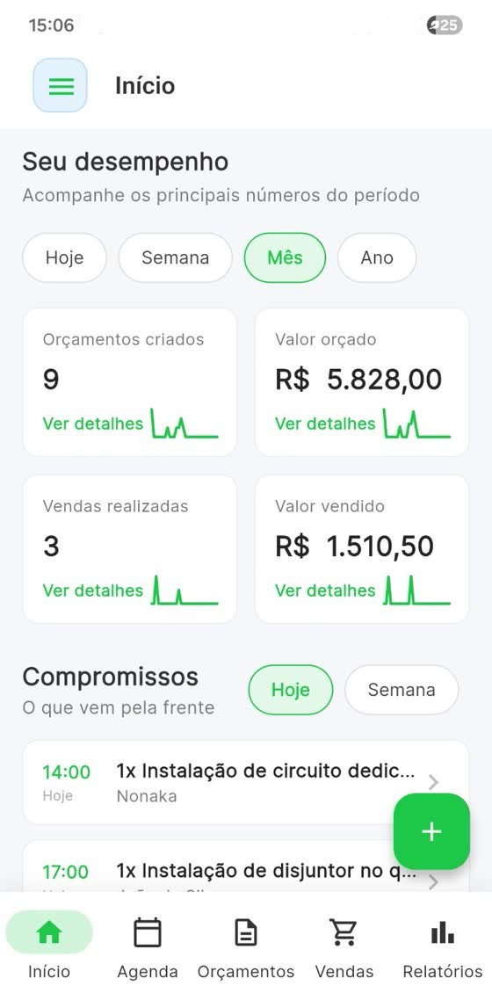
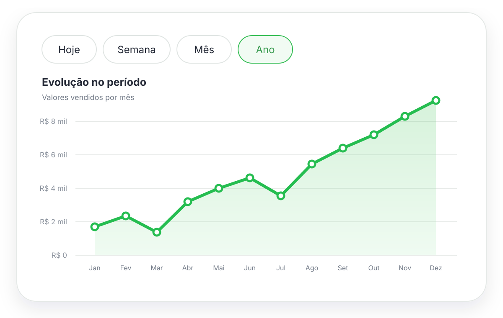
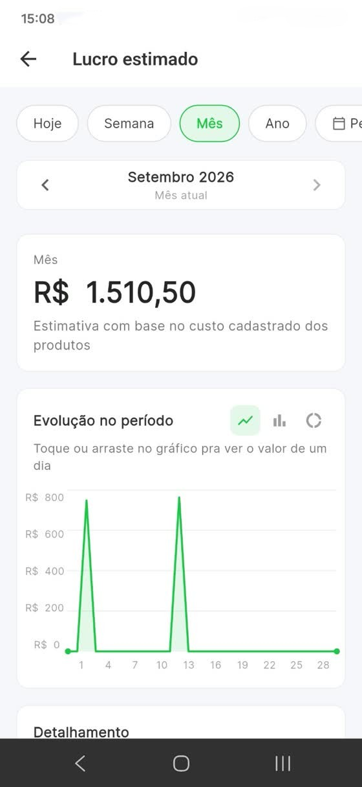
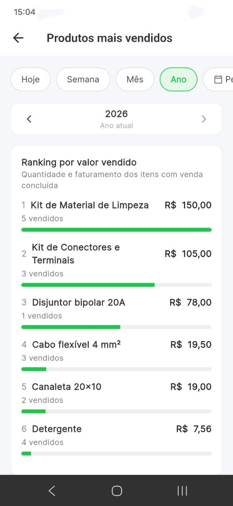
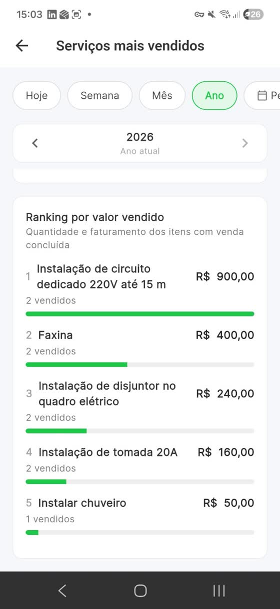
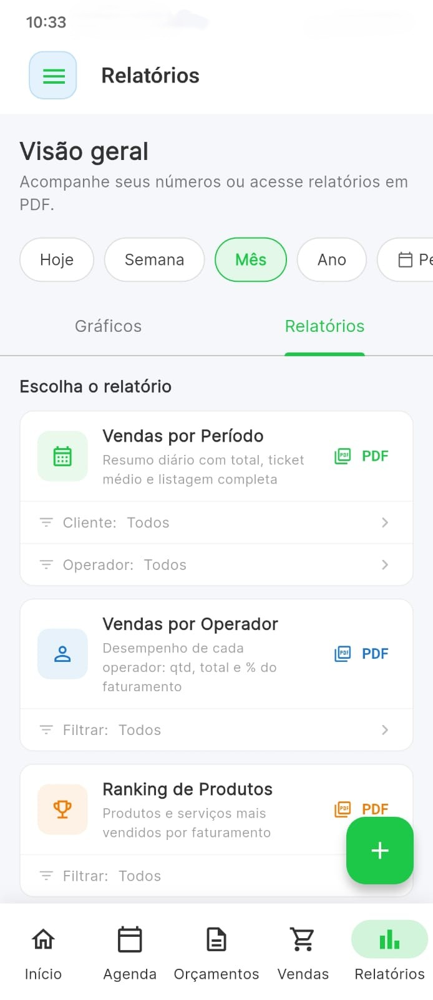

Desempenho
Veja quantidades e valores de orçamentos e vendas.
Acompanhe orçamentos, vendas, conversão, ticket médio, lucro estimado e o que mais gera resultado no seu negócio — direto pelo celular.
Escolha o período e transforme suas movimentações em informações fáceis de entender.
Veja quantidades e valores de orçamentos e vendas.
Saiba quantos orçamentos criados viraram vendas.
Acompanhe ticket médio e lucro estimado com base nos custos cadastrados.
Descubra quais produtos e serviços mais geram vendas.

Visualize os principais resultados e toque em qualquer indicador para acompanhar sua evolução e o detalhamento do período.
Navegue por dias, semanas, meses e anos anteriores. Os gráficos mostram a evolução e o detalhamento apresenta os valores que formam cada resultado.

Veja os produtos e serviços mais vendidos, com quantidade e valor faturado. Assim fica mais fácil decidir onde concentrar seus esforços.




Escolha o período, aplique os filtros disponíveis e gere um documento profissional para consultar ou compartilhar quando precisar.
Crie orçamentos e registre as vendas normalmente no Valeu.
Consulte hoje, semana, mês, ano ou defina um intervalo específico.
Abra os indicadores, gráficos, detalhamentos e rankings.
Crie o PDF e compartilhe o documento direto pelo celular.
O Valeu ajuda profissionais autônomos, MEIs e pequenos negócios a acompanhar vendas sem depender de planilhas. Consulte resultados por período, entenda a conversão dos orçamentos, identifique os itens mais vendidos e gere relatórios de vendas em PDF pelo celular.
Informações claras sobre os indicadores e relatórios disponíveis no Valeu.
Quantidade e valor de orçamentos e vendas, conversão, ticket médio, lucro estimado e rankings de produtos e serviços.
Sim. Você pode navegar por dias, semanas, meses e anos anteriores, além de selecionar um período específico para os relatórios.
Sim. É possível gerar relatórios em PDF, visualizar o documento e compartilhá-lo pelo celular.
A estimativa considera as vendas e os custos cadastrados nos produtos. Quanto mais completos os cadastros, mais útil será o indicador.
O Valeu está disponível gratuitamente para Android na Google Play.
Acompanhe seus resultados e gere relatórios direto pelo celular.